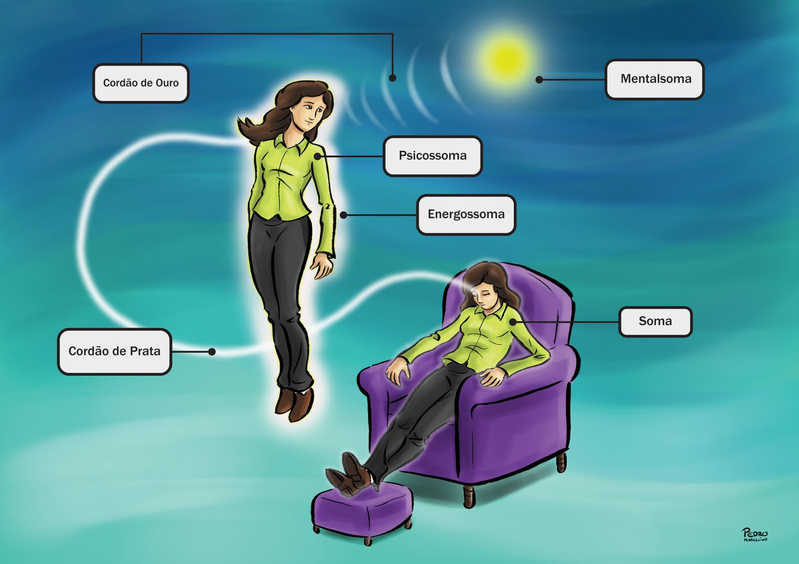
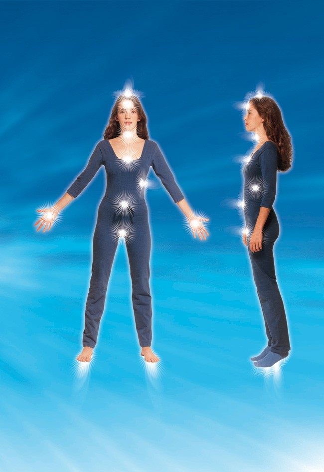

Esclarecer sobre as bioenergias e sua utilização no dia-a-dia.
Objetivo específico
Esclarecer os conceitos básicos das bioenergias segundo a Conscienciologia
Idêntificar a existência das bioenergias
Consciência
Ego, alma, espírito, essência, eu, individualidade, personalidade, pessoa, self, ser ou sujeito.
Bioenergia
Imanente: É a bioenergia natural já existente nos ambientes.
Exemplo:
Fitoenergia
Geoenergia
Cosmoenergia
Extrafísica
Hidroenergia
Aeroenergia
Consciencial: É a bioenergia imanente gerada pela Consciência através de seus pensenes.
Holossoma

Energossoma
O Energossoma é um dos quatro veículos de manifestação, que está entre o Soma e o Psicossoma
O mesmo serve para ligar o Psicossoma ao Soma e vitalizar o soma.
Sinônimo: Holochacra, paracorpo energético.
Chacras
Coronochacra
Mentalsoma
Chacra Nobre

Frontochacra
3º olho
Intelectualizade
Clarevidência
Laringochacra
Comunicação
Cardiochacra
Emoções
Esplênicochacra
Rememoração da Projeção
Umbilocochacra
Subcérebro abdominal
Sexochacra
Vitalização do processo sexual
Palmochacra
Exteriorização das energias
Plantochacra
Absorção das energias
Chacra nucal
Acoplamento de consciex
Atributos Energéticos
Direção
Intesidade
Rítmo
Intermitência
Velocidade
Retilinearidade
Varredura
Quantidade
Manobras Energéticas
Vídeo
EV
Caráter: individual ou coletivo.
Cultura: Estar fundamentado em cultura de bases repressivas.
Recursos: Despriorizar a aplicação de recursos para a Tecnologia em geral.
Vontade: O crescimento da confiança na potência da própria vontade.
Imagens: santinhos idolatrados, esculturas da Virgem Maria, estatuetas de seitas ocultistas.
Incensos: tabagismo ingênuo anti-social, podendo ser cancerígeno.
Mantras: reverberações vocais específicas, versos de culto, cânticos ritualísticos.
Psicosfera
Definição: É o campo resultante das irradiações bioenergéticas das consciências intra e extrafísicas refletindo o nível evolutivo, o padrão psíquico ou pensênico e a situação holossomática do momento.
Sinônimo:Aura
Sinalética Energética
Definição: Sinal repetido que facilita a identificação de algo.
Higienização
ASSIM
Assimilação Simpática
É o ato de uma consciência absorver as energias de outras, sentindo as repercursões fisiológicas da mesma.
DESASSIM
Desassimilação Simpática
É o ato da consciência assediada, por força da vontade conseguir desassediar, limpar, qualquer interferência exeterna.
Vampirismo Energético
Consiste na absorção energética de uma consciência descompesada em outra.
Acoplamento Energético
É a junção das energias(holossomáticas) de 2 ou mais consciências, podendo ser involutária ou voluntária.
Compensação Energética
É a recomposição, equilíbrio energético.
Descompensação Energética
É o desequilíbrio energético.
Prática Energética
MBE
Circurlação fechada, intensificando e acelerando até atingir o EV